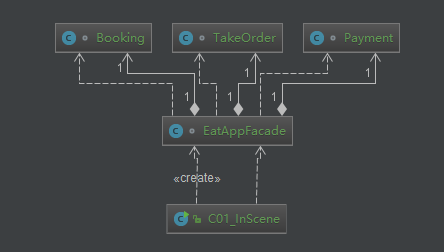
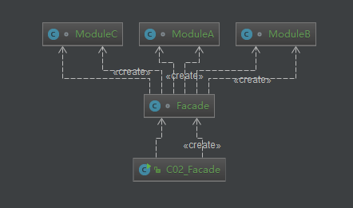

原文出处:本文由博客园博主知了一笑提供。
原文连接:https://www.cnblogs.com/cicada-smile/p/11537923.html
原文连接:https://www.cnblogs.com/cicada-smile/p/11537923.html
本文源码：GitHub·点这里 || GitEE·点这里
一、生活场景
1、场景描述
在移动互联网没有普及之前，去饭店吃饭的流程大致如下：选座位，排队，点菜，结账。后来移动互联网普及，通过手机APP就可以操作这些流程，非常的方便快捷：通过手机可以知道某饭店是不是还有空位，到了饭店之后直接入座，然后通过手机点菜，结账，中间省去了很多繁琐的流程。
2、代码图解

3、代码实现
/**
* 外观模式描述饭店就餐流程
*/
public class C01_InScene {
public static void main(String[] args) {
EatAppFacade eatAppFacade = new EatAppFacade () ;
eatAppFacade.dining();
}
}
// 预定
class Booking {
private static Booking booking = new Booking() ;
public static Booking getInstance (){
return booking ;
}
public void bookPlace (){
System.out.println("位置预定...");
}
}
// 点餐
class TakeOrder {
private static TakeOrder takeOrder = new TakeOrder ();
public static TakeOrder getInstance (){
return takeOrder ;
}
public void orderDishes (){
System.out.println("点餐...");
}
}
// 付款
class Payment {
private static Payment payment = new Payment () ;
public static Payment getInstance (){
return payment ;
}
public void payMoney (){
System.out.println("结账...");
}
}
// 点餐APP
class EatAppFacade {
private Booking booking ;
private TakeOrder takeOrder ;
private Payment payment ;
public EatAppFacade (){
this.booking = Booking.getInstance() ;
this.takeOrder = TakeOrder.getInstance() ;
this.payment = Payment.getInstance() ;
}
// 就餐流程
public void dining (){
booking.bookPlace();
takeOrder.orderDishes();
payment.payMoney();
}
}二、外观设计模式
1、基本简介
外观模式是对象的结构模式，客户端与一个子系统的通信必须通过一个统一的外观对象进行。外观模式提供一个高层次的接口，使得子系统更易于使用。
2、模式图解

3、核心角色
- 外观角色
客户端可以调用这个角色的方法。此角色具有相关的子模块的功能。在正常情况下，本角色会将所有从客户端发来的请求委派到相应的子系统去。
- 子模块角色
可以同时有一个或者多个子模块。每个子模块都不是一个单独的类，而是一个类的集合（如上面的子模块就是由ModuleA、ModuleB、ModuleC三个类组合而成）。每个子系统都可以被客户端直接调用，或者被外观角色调用。子模块并不知道外观的存在，对于子模块而言，外观角色仅仅是另外一个客户端。
- 客户端角色
外观对象功能的调用者。
4、源代码实现
public class C02_Facade {
public static void main(String[] args) {
Facade facade = new Facade();
facade.clientNeed1();
facade.clientNeed2();
}
}
class ModuleA {
public void testA (){
System.out.println("ModuleA.testA()");
}
}
class ModuleB {
public void testB (){
System.out.println("ModuleB.testB()");
}
}
class ModuleC {
public void testC (){
System.out.println("ModuleC.testC()");
}
}
class Facade {
/**
* 客户需求1
*/
public void clientNeed1 (){
ModuleA moduleA = new ModuleA();
moduleA.testA();
ModuleB moduleB = new ModuleB();
moduleB.testB();
}
/**
* 客户需求1
*/
public void clientNeed2 (){
ModuleB moduleB = new ModuleB();
moduleB.testB();
ModuleC moduleC = new ModuleC();
moduleC.testC();
}
}三、Mybatis应用场景
1、使用场景
- org.apache.ibatis.session.Configuration
- org.apache.ibatis.reflection.MetaObject
Configuration 创建 MetaObject 的时候。
2、Configuration源码
public class Configuration {
protected ObjectFactory objectFactory;
protected ObjectWrapperFactory objectWrapperFactory;
public Configuration() {
this.objectFactory = new DefaultObjectFactory();
this.objectWrapperFactory = new DefaultObjectWrapperFactory();
}
public MetaObject newMetaObject(Object object) {
return MetaObject.forObject(object, this.objectFactory, this.objectWrapperFactory);
}
// ... 省去其他源码
}3、MetaObject 源码
public static MetaObject forObject(Object object,
ObjectFactory objectFactory,
ObjectWrapperFactory objectWrapperFactory) {
return object == null ?
SystemMetaObject.NULL_META_OBJECT :
new MetaObject(object, objectFactory, objectWrapperFactory);
}四、优缺点总结
松散了客户端与子模块的耦合关系，使子模块功能的调用更加简单。通过合理使用Facade，可以更好地划分访问的层次。有些方法是对系统外的，有些方法是系统内部使用的，把需要暴露给外部的功能集中到门面中。如果过多的使用外观模式，会让子模块功能的维护变的复杂，一个功能方法改变，会牵扯到多个外观对象的改变。
五、源代码地址
GitHub·地址
https://github.com/cicadasmile/model-arithmetic-parent
GitEE·地址
https://gitee.com/cicadasmile/model-arithmetic-parent：外观模式2.png)